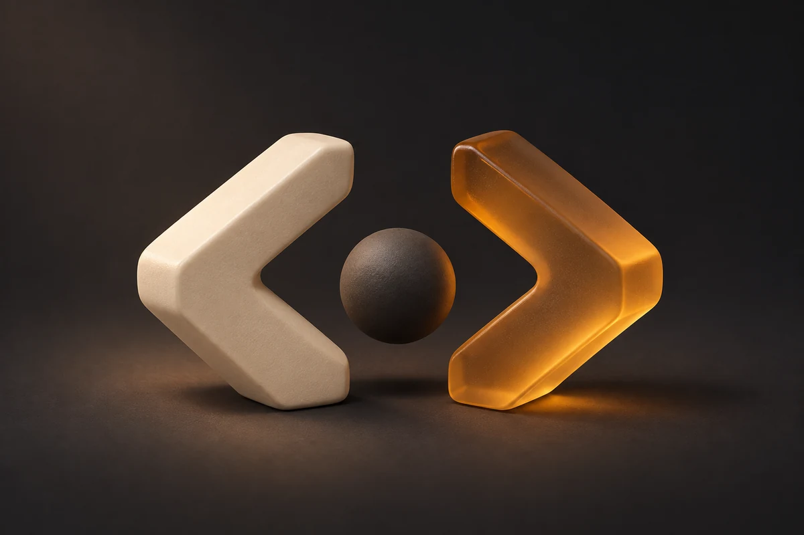
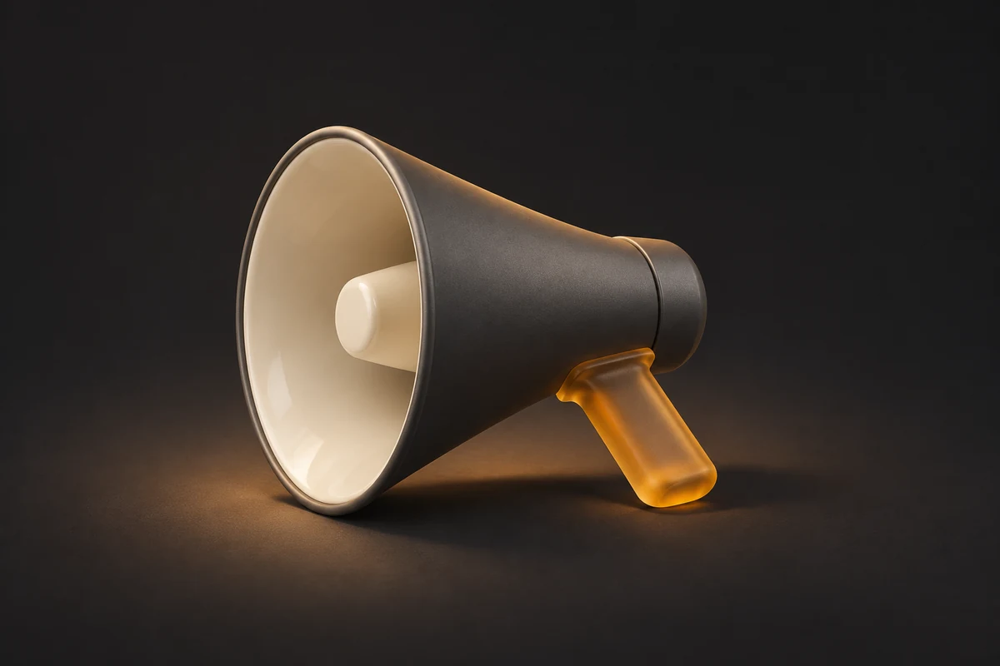
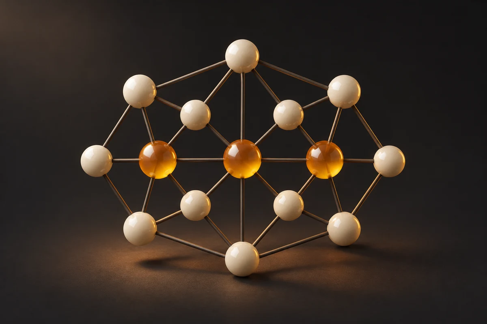
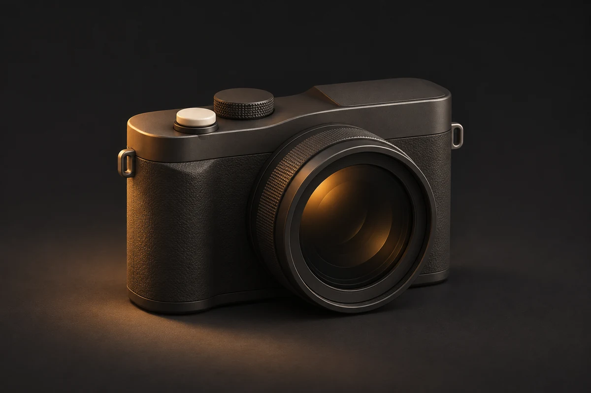
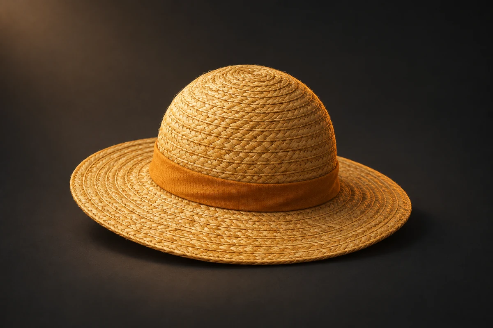
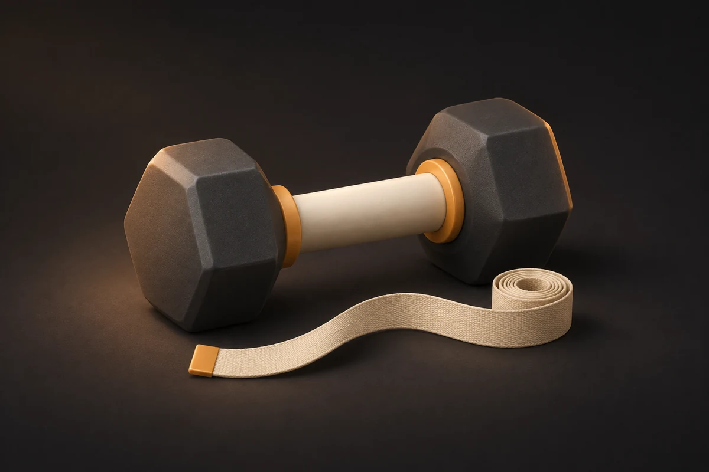

HACKATHON · EDUCATION
Edify
An AI-powered learning platform.
I'm Abrar Jawad Tarafder, a Computer Science graduate from York University.
My interests span web development, game development, data analytics, and AI. Here you'll find my projects, résumé, and personal websites.
Personal projects and collaborations.
Showing all 12 projects.
HACKATHON · EDUCATION
An AI-powered learning platform.
PASSION PROJECT · LEARNING
Shared study notes and topic summaries.
DATA ANALYTICS · EXCEL & SQL
Analysis with Excel, SQL, and more.
GAME DEVELOPMENT · PASSION PROJECT
Small 2D games and experiments.
WEB DEVELOPMENT · PERSONAL SITES
Personal websites and portfolio work.
HACKATHONS · COLLABORATION
Projects built with teams at hackathons.

PASSION PROJECT · EXPLORATION
Small projects for learning new languages.

PASSION PROJECT · MARKETING
Experience and certifications in marketing.

AI + ML · EXPLORATION
An interest in AI and machine learning.

PASSION PROJECT · PHOTOGRAPHY
A collection of photos and edits.

PASSION PROJECT · ANIME
A beginner's guide to the anime.

PASSION PROJECT · FITNESS
Calorie tracking and workout resources.